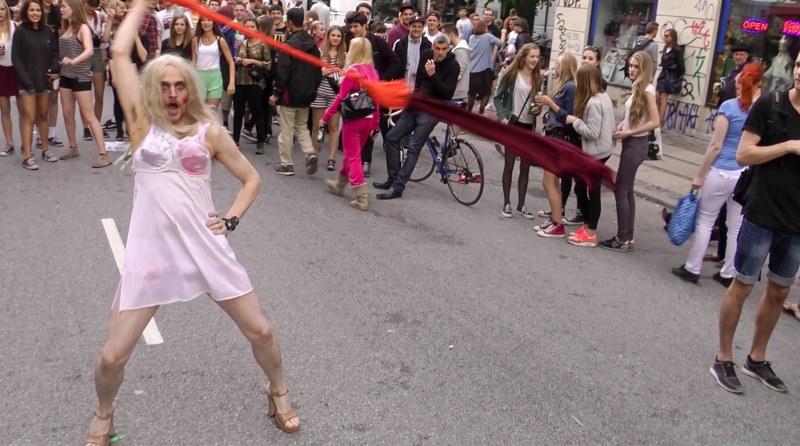

Det hele begyndte med en tur gennem Vesterbro under Distortion. Gaderne var fyldt med festende mennesker, og midt i menneskemængden fik jeg en idé. Det her ville være den perfekte kulisse til en musikvideo.
Problemet var bare, at jeg hverken havde en sang eller en plan. Så jeg brugte aftenen på at gå rundt og studere gaderne, menneskene og mulighederne. Året efter var jeg klar.
Ud i gadefesten
Jeg trak i en underkjole, satte en paryk på hovedet og malede hver anden tand sort. Så begav jeg mig ud mellem tusindvis af festende mennesker for at optage musikvideoen til Københavns værste trash drag.
Jeg var spændt på, hvordan folk ville reagere. Men de fleste syntes, jeg så herlig ud. Folk kom løbende for at tage selfies med mig.
Andre blev oprigtigt bekymrede.
De troede tilsyneladende, at jeg var en psykisk syg person, der var faret vild i gadefesten og ikke kunne finde hjem.
“Må du gerne være her?”
“Er du helt alene?”
“Hvem er du sammen med?”
“Hvor bor du egentlig?”
“Skal vi hjælpe dig?”
Jeg svarede ikke. Musikken spillede i mine høretelefoner, som jeg havde skjult bag parykken. Jeg fortsatte gennem gaderne og fremsagde min tekst, mens kameraet fulgte mig.
Det, seerne ikke ved
Når jeg senere har vist videoen til folk, har flere reageret med bekymring.
“Du skal altså passe på med at gøre sådan noget. Folk kan blive virkelig vrede!”
Og jeg kan godt forstå dem.
I videoen stjæler jeg et halstørklæde fra en kvinde. Jeg snupper poser med tomme flasker fra folk på gaden. På et tidspunkt stormer jeg ind i en butik og river kjoler i strimler.
Men der er noget, seerne ikke ved.
Alle de mennesker, jeg generer, er med i mit filmhold. Kvinden med halstørklædet, folkene med flaskerne og dem i butikken. Jeg havde samlet dem på forhånd, og alle kendte deres roller.
Jeg fulgte bare mit manuskript.
Men jeg improviserede også. Midt på gaden fik jeg lyst til at lave en performance. Jeg bandt to kjoler sammen og begyndte at svinge dem rundt over hovedet. Folk stoppede op, og snart havde jeg samlet en hel menneskemængde omkring mig. Pludselig stod jeg midt i mit eget improviserede gadeshow.

Jeg har lavet mange musikvideoer gennem årene, men Københavns værste trash drag er nok min yndlingsvideo.